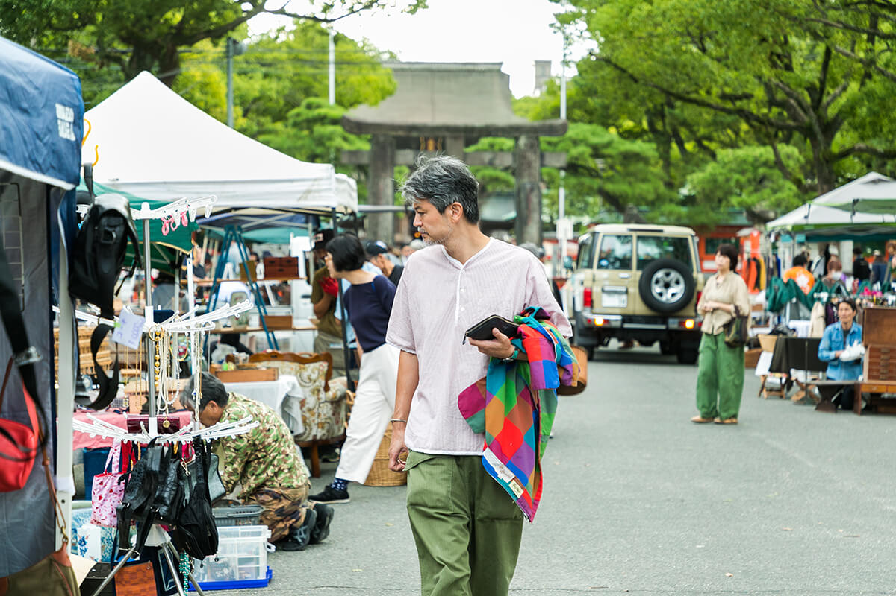
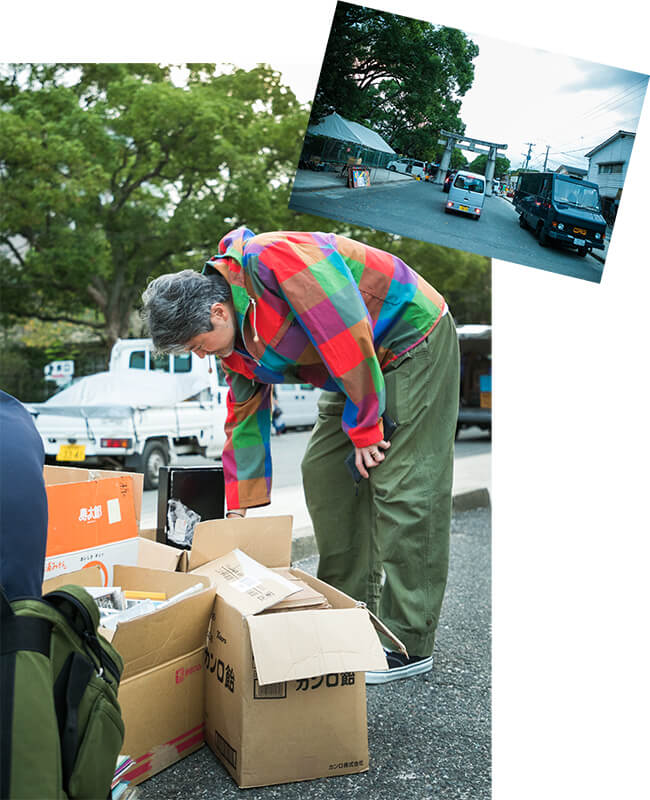
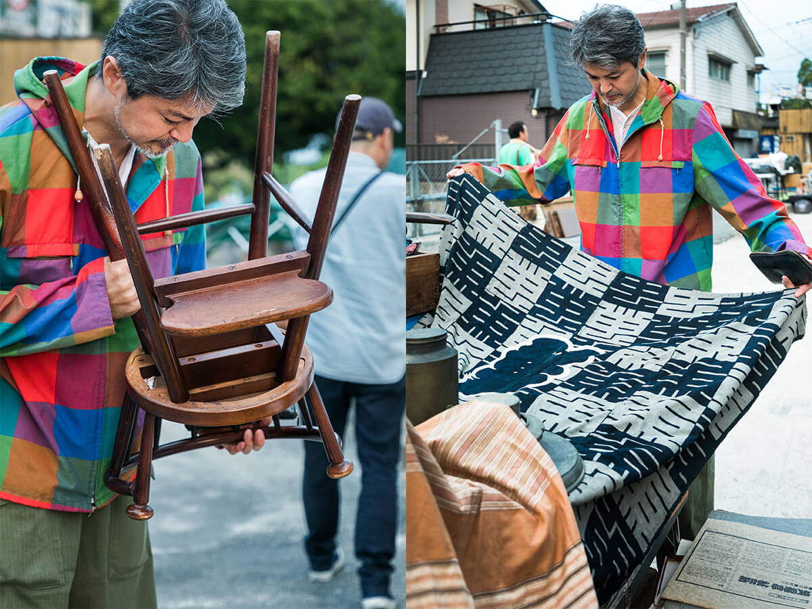
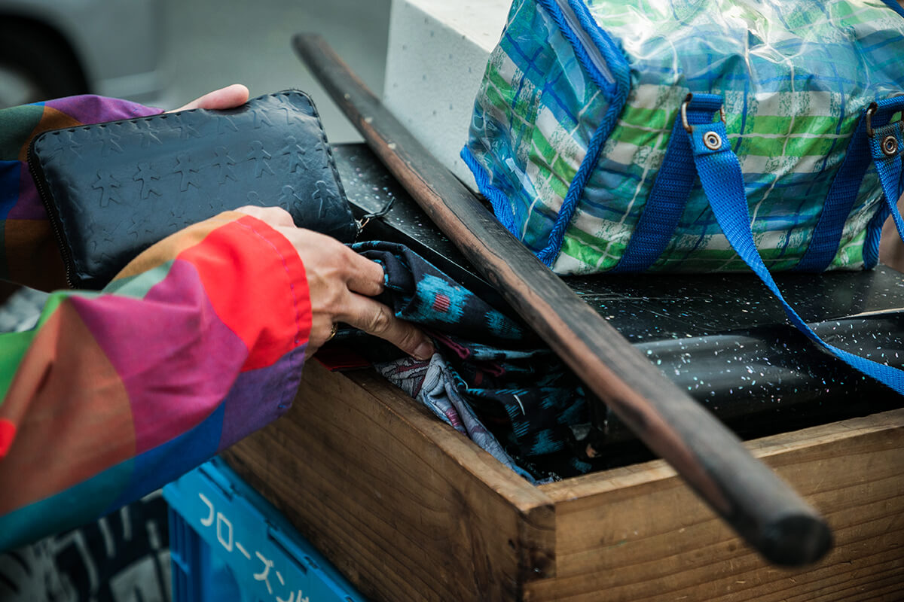
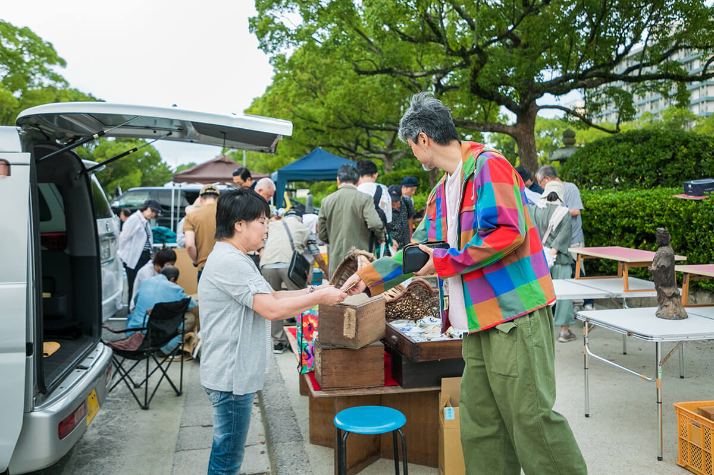
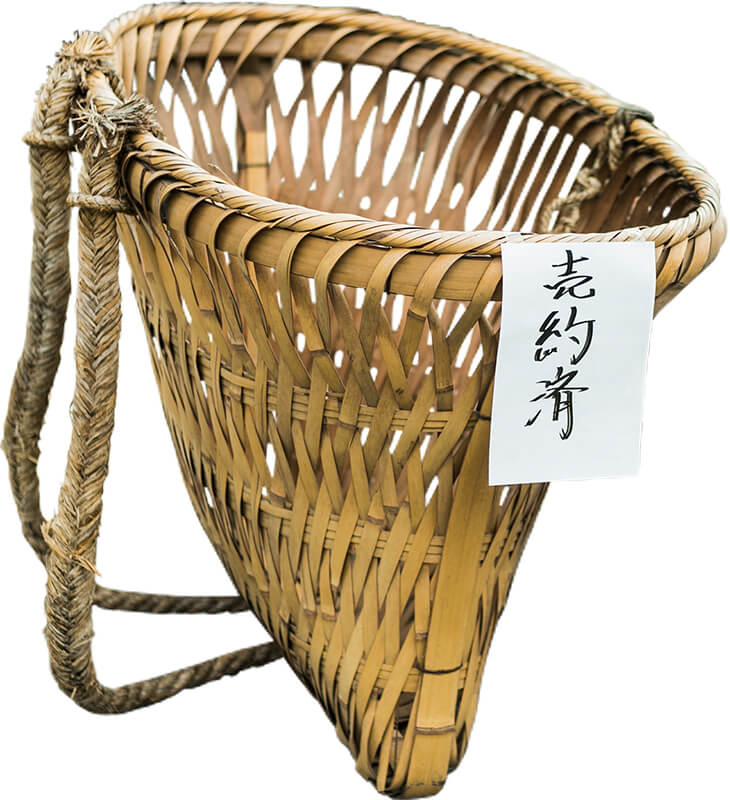
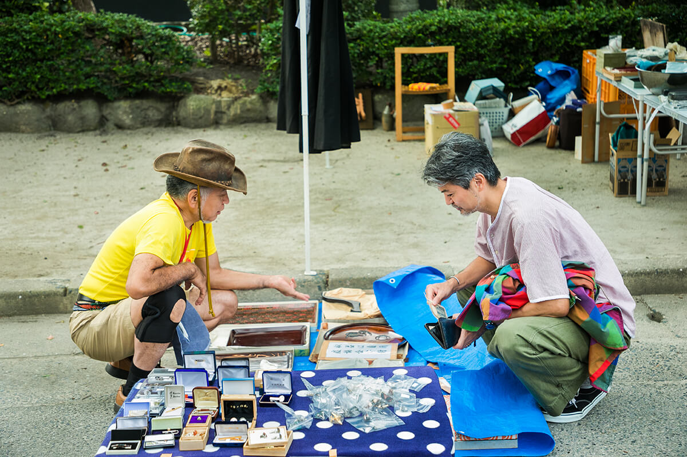
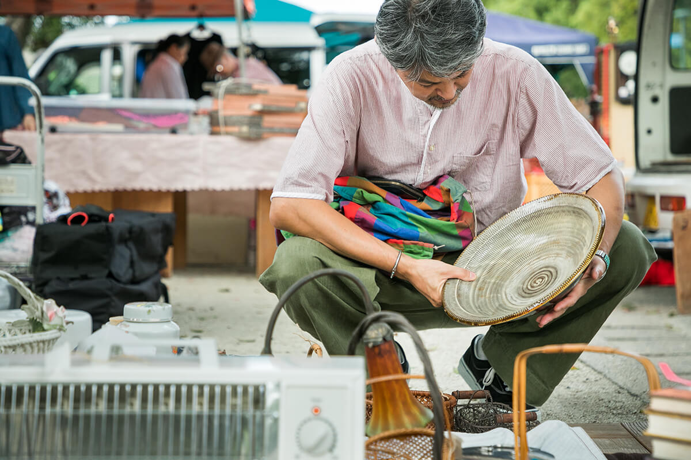

Префектура Фукуока · Фукуока · блошиный рынок
Рынок «Кадзэ-но итиба» у святилища Хакодзаки: утро с охотником за старыми вещами

Антиквариат кажется делом знатоков, но старые вещи на каждый день доступны всем. Мы провели утро на блошином рынке у святилища Хакодзаки в Фукуоке вместе с торговцем винтажом, который давно закупает здесь товар для своего магазина.
Рынок
Старые вещи на аллее святилища
Святилище Хакодзаки стоит в районе Хигаси города Фукуока, недалеко от моря. В дни рынка «Кадзэ-но итиба» длинную аллею перед ним занимают около 220 торговцев: старая посуда, мебель, ткани, украшения и мелочи, назначение которых не всегда сразу понятно. Его называют ещё блошиным рынком святилища Хакодзаки.
Наш проводник по профессии ищет и продаёт винтажные вещи для дома. По его словам, на рынке важно не только что купить, но и как ходить. У него пять правил:
- Приходите с пустыми руками, чтобы спокойно рассматривать вещи.
- Меняйте маршрут: с другой стороны та же вещь выглядит иначе.
- Не требуйте невозможного, когда торгуетесь.
- Платите сразу, а покупки забирайте в конце.
- Наслаждайтесь сезоном и воздухом места.
7:00
Пока торговцы раскладываются
Мы пришли к семи утра, когда торговцы только начинали разгружать машины. Опытные покупатели ждут уже в это время и смотрят товар, пока его ещё достают из коробок. Рано утром здесь много профессиональных закупщиков, поэтому опередить коллег можно только одним способом: прийти раньше них.

7:30
Первый круг решает всё
Первый круг наш проводник проходит почти бегом, зигзагом от одного ряда к другому, и отмечает всё, что хочется купить. На втором круге он идёт медленно, сначала вдоль одной стороны, потом вдоль другой. Третий круг нужен, чтобы проверить, не пропущено ли что-то.
7:45
Смотреть везде
Он заглядывает в глубину прилавков и в коробки, которые ещё не открывали. Бывает, что понравившаяся вещь оказывается частью оборудования лавки и не продаётся. Его это не смущает: смотреть стоит на всё.

Иногда самое интересное лежит на дне ящика, под другими вещами.

8:00
Торговаться с удовольствием
Начинать разговор с «уступите вдвое» здесь не принято. «Лучше торговаться так, чтобы обеим сторонам было приятно, и не просить невозможного», советует наш проводник. Когда цена согласована, продавцу сразу платят, а вещь он откладывает до конца закупки.


8:30
Разговор тоже добыча
Беседа с продавцами входит в удовольствие от рынка. Если вещь зацепила, расспросите, откуда она, из чего сделана и какой техникой. Так понемногу копятся знания, которые пригодятся на следующем рынке.

9:00
Вещи этих мест
На блошиных рынках можно найти то, что связано с окружающими краями. На «Кадзэ-но итиба» по доступным ценам продаётся народная посуда мингэй из соседней префектуры Оита.

11:30
Закупка окончена
Обойдя рынок столько раз, сколько хотелось, он собирает отложенные покупки, и к половине двенадцатого закупка закончена. Руки заняты, настроение отличное.
Рынок «Кадзэ-но итиба» (блошиный рынок Хакодзаки)
- Адрес
- префектура Фукуока, Фукуока, район Хигаси, Хакодзаки, 1-22-1, аллея святилища Хакодзаки
- Телефон
- +81 92-512-7519 (организатор, антикварная лавка)
- Часы работы
- 7:00–15:00
- Даты
- несколько дней в году, расписание уточняйте у организатора (в 2019 году, например, 24 ноября и 8 декабря)
Фото: Миюки Тодо.